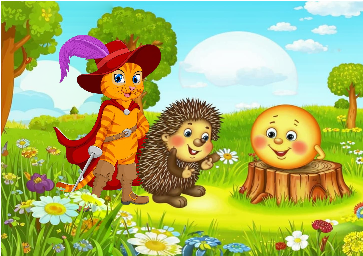

Часть 1: Встреча колобка и волка
Колобок, испеченный бабушкой, покатился по лесу, весело напевая. Вдруг он заметил, как волк притаился за деревом с голодным взглядом. Волк задумал поймать колобка, но колобок был не так прост. Он обманул волка, сказав, что у него есть волшебные способности, и если волк поймает его, то потеряет все свои силы.
Часть 2: Умение колобка
Колобок начинает рассказывать волку о своих приключениях, петь песенки и танцевать. Он упоминает о других зверях, которые уже пытались его поймать, но все они потерпели неудачу. В это время волк не может удержаться и начинает смеяться, теряя бдительность.
Часть 3: Появление кота в сапогах
Кот в сапогах, проходя мимо, услышал песенку колобка. Он решил вмешаться и, используя свою хитрость, предложил помочь колобку избежать волка. Кот начинает строить план, как запутать волка, и предлагает колобку притвориться, что он потерял свои волшебные способности.
Часть 4: Еж Григорий на спасение
Еж Григорий, который следил за всем происходящим, решает помочь друзьям. Он знает, что волк очень боится громких звуков. Григорий предлагает использовать свои колючие шипы и закатить мяч, чтобы испугать волка. Колобок и кот соглашаются с планом.
Часть 5: Победа над волком
Когда волк снова пытается поймать колобка, кот, еж и колобок осуществляют свой план. Колобок начинает притворяться, что он теряет свою силу, а Григорий катит мяч, создавая громкий шум. Волк в страхе убегает, думая, что колобок действительно стал беспомощным. Кот с весёлым смехом подсказывает колобку, что у него есть сила дружбы.
Часть 6: Друзья навсегда
После приключений колобок, кот и еж становятся лучшими друзьями. Они решают каждый день проводить вместе, весело катаясь по лесу и исследуя новые места. Каждый раз, когда кто-то из них попадает в беду, они используют свои уникальные навыки и дружбу, чтобы помочь друг другу. Волк же, научившись уроку, больше никогда не пытался их поймать, а наоборот, стал их другом.